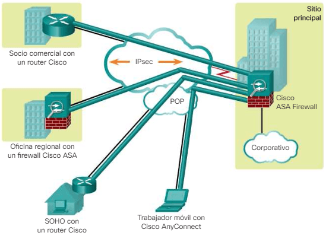

Seguridad en la comunicación de datos
Al hablar sobre la seguridad en la comunicación de datos en una red se tienen dos conceptos fundamentales: IPSec y VPN.
Protocolo IPSec
El protocolo IPsec es uno de los protocolos de seguridad más importantes, y es ampliamente utilizado en empresas, y también en usuarios domésticos. En los últimos tiempos, fabricantes como ASUS, AVM e incluso D-Link, están integrando VPN en sus routers domésticos basados en el protocolo IPsec. Este protocolo proporciona servicios de seguridad a la capa IP y a todos los protocolos superiores, como TCP y UDP (capa de transporte en internet). Gracias a IPsec, podemos comunicar diferentes puntos de Internet de forma segura, como dos o más empresas entre ellas, o un usuario con su hogar, IPsec se adapta perfectamente a las necesidades de VPN de ambos mundos.
Características del protocolo
Una característica muy importante de IPsec es que trabaja en la capa 3 de OSI (capa de red), otros protocolos de VPN como OpenVPN o WireGuard trabajan en la capa 4 (capa de transporte), ya que estos dos últimos basan su seguridad en TLS y DTLS respectivamente. IPsec en redes IPv4 está justo por encima de la cabecera IP, sin embargo, en redes IPv6 está integrado (ESP) en la propia cabecera en la sección de "Extensiones".
IPsec está implementado por un conjunto de protocolos criptográficos para (1) asegurar el flujo de paquetes, (2) garantizar la autenticación mutua y (3) establecer parámetros criptográficos.
Los servicios de seguridad IPsec proporcionan cuatro funciones fundamentales:
- Confidencialidad (cifrado): en una implementación de VPN, los datos privados se transfieren a través de una red pública. Por este motivo, la confidencialidad de los datos es fundamental. Esto se puede lograr mediante el cifrado de los datos antes de transmitirlos a través de la red. Este es el proceso de tomar todos los datos que una computadora envía a otra y codificarlos de una manera que solo la otra computadora pueda decodificar.
- Integridad de datos: el receptor puede verificar que los datos se hayan transmitido a través de Internet sin sufrir ningún tipo de modificaciones ni alteraciones. Si bien es importante que los datos a través de una red pública estén cifrados, también es importante verificar que no se hayan modificado cuando estaban en tránsito.
- Autenticación: verifica la identidad del origen de los datos que se envían. Esto es necesario para la protección contra distintos ataques que dependen de la suplantación de identidad del emisor. IPsec utiliza el intercambio de claves de Internet (IKE) para autenticar a los usuarios y dispositivos que pueden llevar a cabo la comunicación de manera independiente.
- Protección antirreproducción: es la capacidad de detectar y rechazar los paquetes reproducidos, y ayuda a prevenir la suplantación de identidad. Verifica que cada paquete sea único y no esté duplicado. Los paquetes IPsec se protegen mediante la comparación del número de secuencia de los paquetes recibidos con una ventana deslizante en el host de destino o el gateway de seguridad. Se considera que un paquete que tiene un número de secuencia anterior a la ventana deslizante tiene un retraso o está duplicado.
Seguidamente, otra característica muy importante de IPsec, es que permite dos arquitecturas de VPN: tanto VPN de acceso remoto como también VPN site-to-site. En cuanto a la negociación de la criptografía, IPsec integra un sistema de negociación para que los equipos finales negocien el mejor cifrado posible que soporten, acordar las claves de intercambio, y elegir los algoritmos de cifrado que tengan en común. Dependiendo de la cabecera de IPsec usada (AH o ESP), podremos comprobar solamente la autenticidad del paquete, o cifrar la carga útil de todo el paquete IP y comprobar también su autenticidad.
Cuando dos hosts han establecido una sesión IPsec, los segmentos TCP y datagramas UDP son enviados entre ellos cifrados y autenticados, además, se comprueba la integridad también para evitar que alguien lo pueda haber modificado. Por lo tanto, IPsec garantiza la seguridad de las comunicaciones.
Algunas ventajas de IPsec es que está apoyado por todos los estándares de la IETF, y proporciona un «estándar» de VPN por lo que todos los dispositivos deberían ser compatibles. IPSec está recibiendo un apoyo muy importante de todos los equipos de comunicaciones, ya que es el «estándar» de VPN, mucho más utilizado que OpenVPN o WireGuard. Todas las versiones de sistemas operativos para PC como Windows o Linux, MacOS para equipos Apple, y también Android y iOS soportan el protocolo IPsec. Además, otra característica muy importante, es que, al ser un estándar, hay interoperabilidad entre fabricantes, lo cual constituye una garantía para los usuarios. Otra característica destacable de IPSec es su carácter de estándar abierto, y se complementa perfectamente con la tecnología PKI (Infraestructura de Clave Pública).
Modos de funcionamiento
Modo transporte
En modo transporte, sólo la carga útil (los datos que se transfieren) del paquete IP es cifrada y/o autenticada. El enrutamiento permanece intacto, ya que no se modifica ni se cifra la cabecera IP; sin embargo, cuando se utiliza la cabecera de autenticación (AH), las direcciones IP no pueden ser traducidas, ya que eso invalidaría el hash. Las capas de transporte y aplicación están siempre aseguradas por un hash, de forma que no pueden ser modificadas de ninguna manera (por ejemplo traduciendo los números de puerto TCP y UDP). El modo transporte se utiliza para comunicaciones ordenador a ordenador.
Modo túnel
En el modo túnel, todo el paquete IP (datos más cabeceras del mensaje) es cifrado y/o autenticado. Debe ser entonces encapsulado en un nuevo paquete IP para que funcione el enrutamiento. El modo túnel se utiliza para comunicaciones red a red (túneles seguros entre routers, p.e. para VPNs) o comunicaciones ordenador a red u ordenador a ordenador sobre Internet. El propósito de este modo es establecer una comunicación segura entre dos redes remotas sobre un canal inseguro.